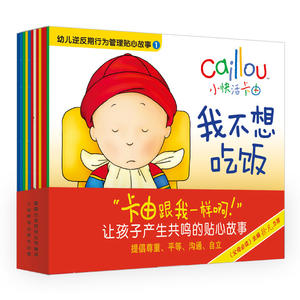

“恐龙全知道”是一套适合4-8岁儿童阅读的、全景写实风格的恐龙科普书。书中将知识巧妙融入故事片断，饶有趣味地向孩子们道出了150余个族群恐龙的各种知识，包括恐龙生存的时代和地点，以及邻里恐龙间的捕食与被捕食关系、婚配、竞争、合作等，真实再现了亿万年前恐龙繁盛的壮观实况和轰轰烈烈的弱肉强食场面。
《幼儿逆反期行为管理贴心故事》选取逆反期*代表性的事件和成长挑战，专为逆反期的宝宝量身定做，适合2-4岁的宝宝和家长一起阅读。在这套书里，卡由遇到了好多问题，这些问题也会出现在你家宝宝的生活中不想吃饭，不想睡觉，不会用便便盆，不想独自睡觉,他想马上就长大，这样就可以想干什么就干什么！
・小学语文课外阅读推荐
《要是你给老鼠吃饼干系列（全9册）》《辫子姐姐故事星球（美绘注音版）（6册套装）》《一封扭来扭去的信（蜗牛童话房子）》《笨狼的故事注音版（全8本）》《不一样的卡梅拉手绘本（1-12册）》《安徒生童话全集（200周年超级典藏本）》・儿童性教育与安全教育书单
《会飞的教室》《我的爸爸叫焦尼》《月亮的味道（精装）》《张炜致少年（套装10册美少年+海边歌手+长跑神童+养》《戴小桥和他的哥们儿系列（共6册）》・清华附小推荐书单
《十万个为什么第六版平装套装（全18册）》《电话里的童话――罗大里儿童文学全集・经典系列》《热带雨林历险记(共10册）我的第一本科学漫画书》《孩子，假如你吃了棉花糖》・幼儿园入学书单
・大家都在给孩子买的暑期阅读书
《月亮河的漂流屋:回家的路很近》《国际大奖小说升级版――屋顶上的小孩》《常新港励志成长系列我想长成一棵葱》・人民日报给孩子的推荐书单
《小熊和最好的爸爸(全7册)》《神奇校车图画书版（全11册）》《最美中国动画上海美影经典故事-曹冲称象》《男孩的田野》・2017年向全国青少年推荐百种优秀出版物
《爱的烘培屋：名家系列・花瓣儿鱼（自然篇）》《了不起的狐狸爸爸（罗尔德・达尔作品典藏）》《上海美影经典故事――哪吒闹海》《最能打动孩子心灵的世界经典童话―列那狐的故事（美》